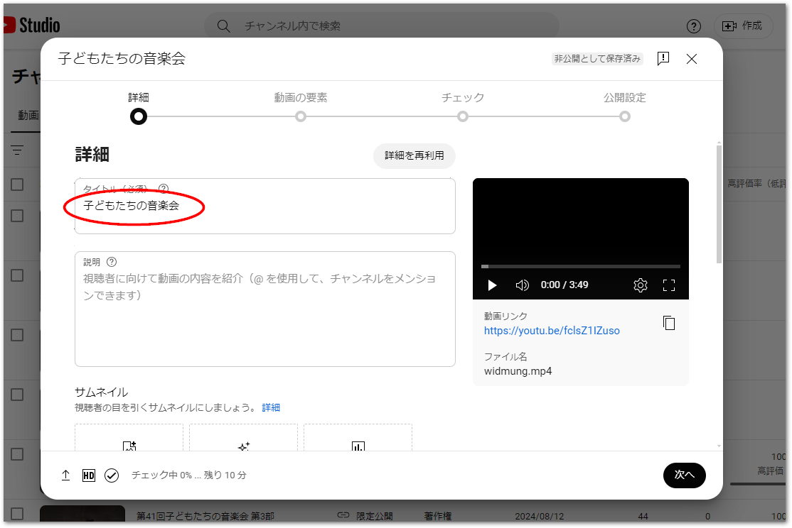
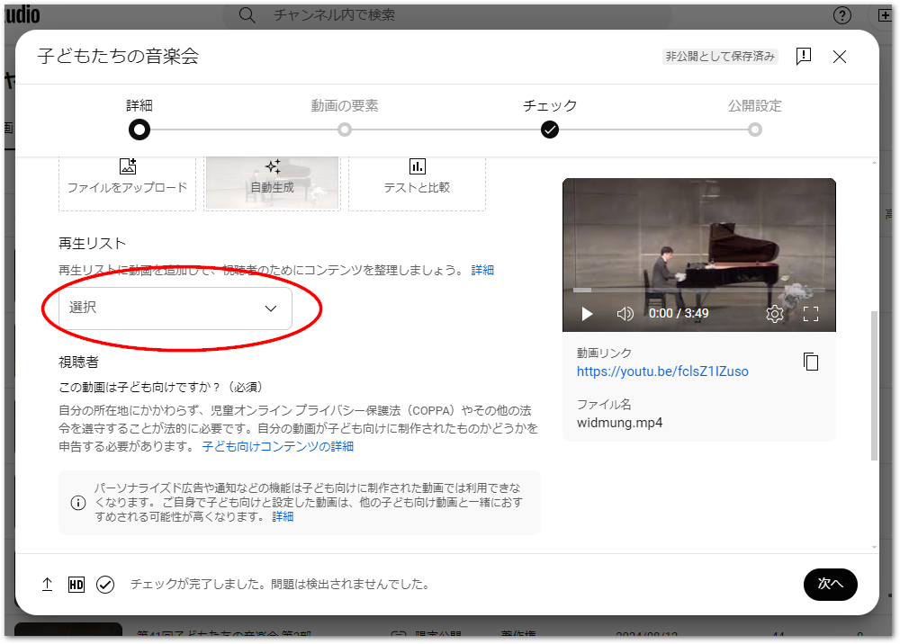
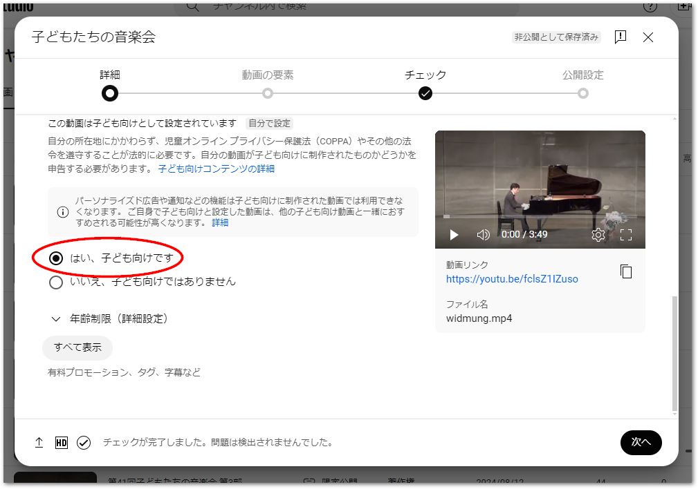
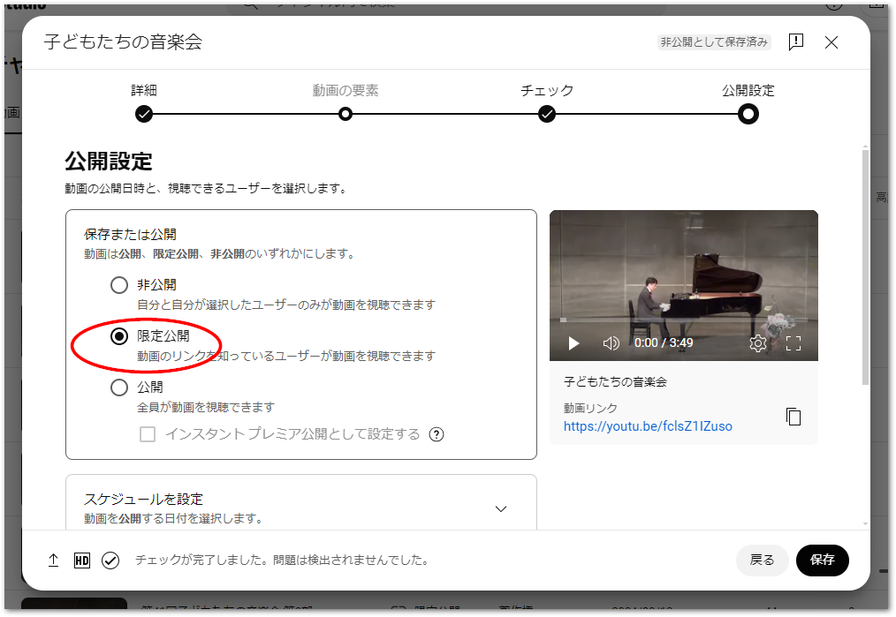

2. 動画の公開・チャプタ割の計算#
Youtube向けに出力したマスタデータを基に、Youtubeへのアップロードの公開、チャプタ割時間シートを作成します。
2.1. Youtubeへのアップロード#
以下の手順でYouTubeにて動画をアップロードし、限定公開します。
まずはタイトルを入力します。必要に応じて説明を記入してください。

複数の部の、複数のファイルに分けた場合、再生リストにまとめると便利です。ここから新しい再生リストを作成することができます。

パーソナライズド広告を無効化するため、子供向けコンテンツに設定します。動画へのコメント投稿などの機能も無効となります。

動画の要素、チェックのページで「次へ」ボタンを押してページを送ります。
公開設定のページでは、「限定公開」に設定します。URLをお知らせした対象の方だけに動画を公開することができます。

2.2. チャプタ割の調査シート作成#
出演者のステージの開始時間を記録して頭出し時間のリストをExcelで作成します。テンプレートは以下からダウンロードしてください。
「部ごとの時間」シート#
部（動画ファイル）毎のトータル時間を記録します。部毎の総時間をH, M, S, MS列にそれぞれ分けて入れてください。
部 |
H |
M |
S |
MS |
VALUE |
SUM |
|---|---|---|---|---|---|---|
1 |
0 |
35 |
42 |
552 |
00:35:42.552 |
00:35:42.552 |
2 |
0 |
23 |
57 |
185 |
00:23:57.185 |
00:59:39.737 |
3 |
0 |
53 |
5 |
431 |
00:53:05.431 |
01:52:45.168 |
4 |
0 |
30 |
1 |
816 |
00:30:01.816 |
02:22:46.984 |
「time_table」シート#
出演ステージの頭出し時間をH, M, S, MS列に設定します。チャプタ毎に個別の動画ファイルになっているため、部毎に0:0:0.000からスタートします。タイトル画面など頭出しが不要な場合は省いても構いません。
部 |
H |
M |
S |
MS |
時刻 |
通算 |
内容 |
出演時間 |
|---|---|---|---|---|---|---|---|---|
1 |
0 |
0 |
8 |
0 |
00:00:08.000 |
00:00:08.000 |
オープニング |
00:01:43.000 |
1 |
0 |
1 |
51 |
0 |
00:01:51.000 |
00:01:51.000 |
Aさん演奏 |
00:02:19.000 |
1 |
0 |
4 |
10 |
0 |
00:04:10.000 |
00:04:10.000 |
Bさん演奏 |
00:03:50.000 |
: |
||||||||
2 |
0 |
0 |
0 |
0 |
00:00:00.000 |
00:35:42.552 |
Aさん歌唱 |
00:07:34.000 |
2 |
0 |
7 |
34 |
0 |
00:07:34.000 |
00:43:16.552 |
Bさん歌唱 |
00:07:41.000 |
: |
||||||||
3 |
0 |
0 |
0 |
0 |
00:00:00.000 |
00:59:39.737 |
合唱〇〇 |
00:04:02.000 |
3 |
0 |
4 |
2 |
0 |
00:04:02.000 |
01:03:41.737 |
合奏〇〇 |
00:04:43.000 |
: |